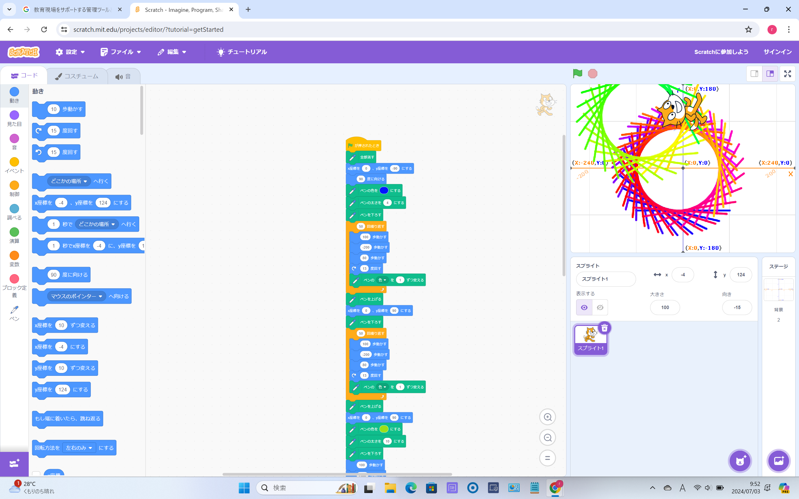
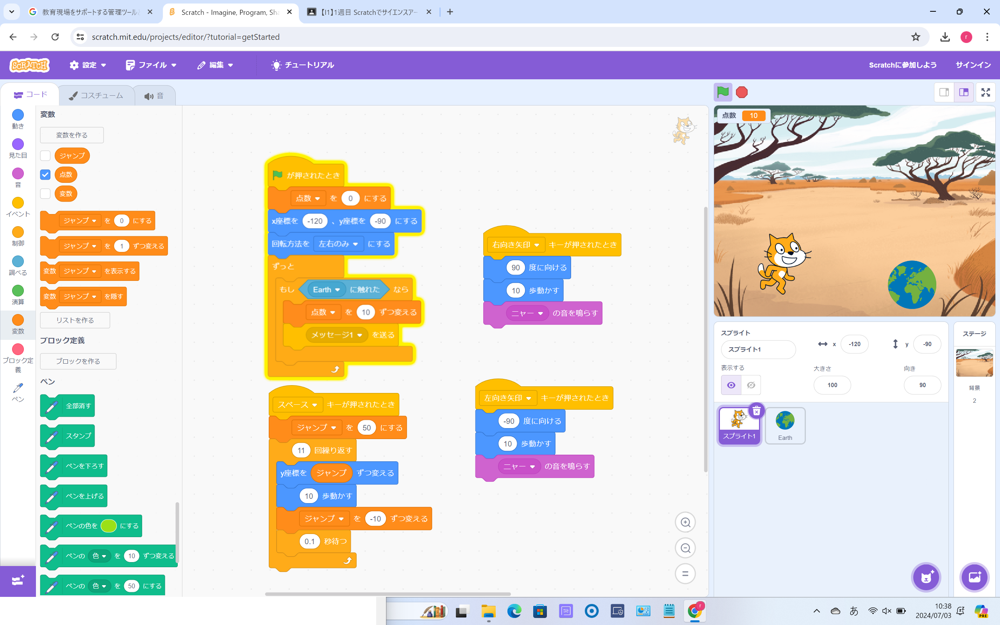

1週目のレポート ： 公大高専１年実習I-1
2a班15番 ぶっちー
第1週目
1-1 サイエンスアート

1.内容
スクラッチを使って線を書くプログラムを作って、自分なりにペンの太さや色を変えて円のような図形をアレンジした。
2.感想
自分でプログラムをして動いたことがうれしかったです 。プログラムしたときに自分が思っていたように動かなかったが座標や歩数を変えることで、自分の思った通りに動かすことができました。プログラムを見ると動き方の理解ができたが自分で考えて円の動きのさせることは難しいと思いました。
1-2 ゲーム

1.内容
猫が上から不規則に落ちてくる地球に触れると点数が入っていくというゲームのプログラムを猫と地球の場合を分けてプログラミングする。
2.感想
落ちてくる物体を触れると点数が入るというシンプルなゲームだが、自分が作ったものだったので楽しかったです。シンプルなゲームだが猫の動きと地球の動きそれぞれにプログラミングしなければならなかったので、自分が想像していたよりもゲームのプログラムは多かったです。
1-3 ホームページ作成
私のホームページ
1.内容
githubのアカウントを作り、ホームページを作成・できるようにし、レポートの作成方法を確認した。
2.感想
ホームページを作成したり、編集したことがなかったので良い経験でした。ホームページを編集したりすることは、難しいものだと考えていましたが、もともとある型に当てはめて文字を入力すればホームページに反映することができたので、簡単に操作することができて楽しかったです。
各ページへのリンク
1週目のレポート
2週目のレポート
3週目のレポート
私のホームページ